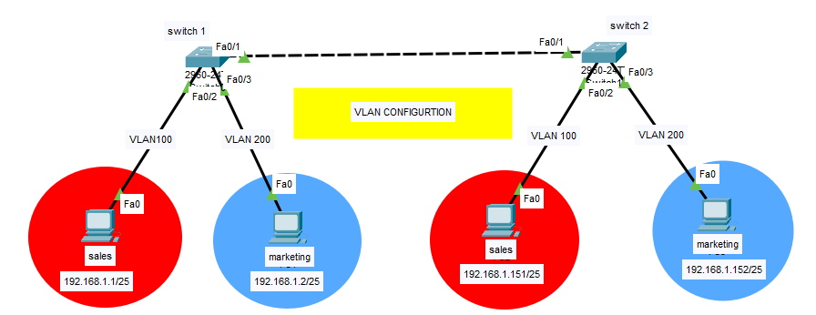

Exit
VLAN is a custom network which is created from one or more local area networks. It enables a group of devices available in multiple networks to be combined into one logical network. Today we will configure two VLANS namely "Sales" and "Marketing".

Here Sales Department and Marketing Department are a part of two different VLANS namely VLAN 100 and VLAN 200 respectively.
Now we will try to make communication possible between Sales PC and Marketing PC which are in different VLANS.
When we try to send a packet from Sales PC to the Marketing PC , the packet does not reach there because they both are in different VLANS.
But when we ping Sales PC of one department with another Sales pc of different Department then the packet is successfully sent as shown in the figure. This happens because both Sales PCS belong to same VLANS.
Practical Implementation